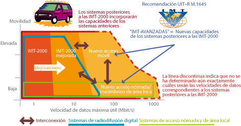
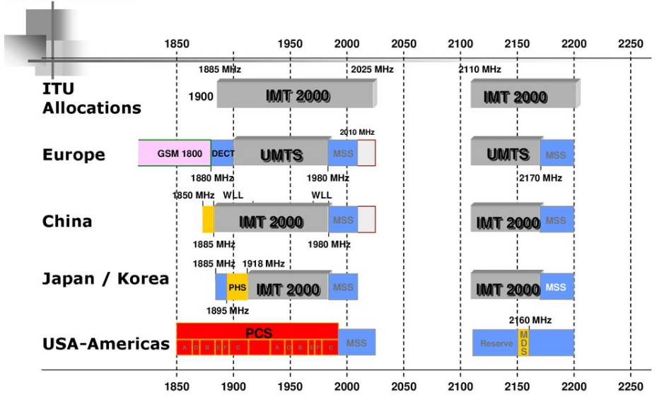
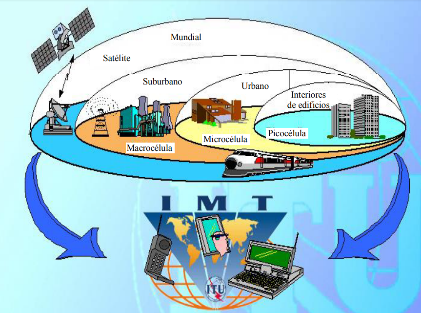
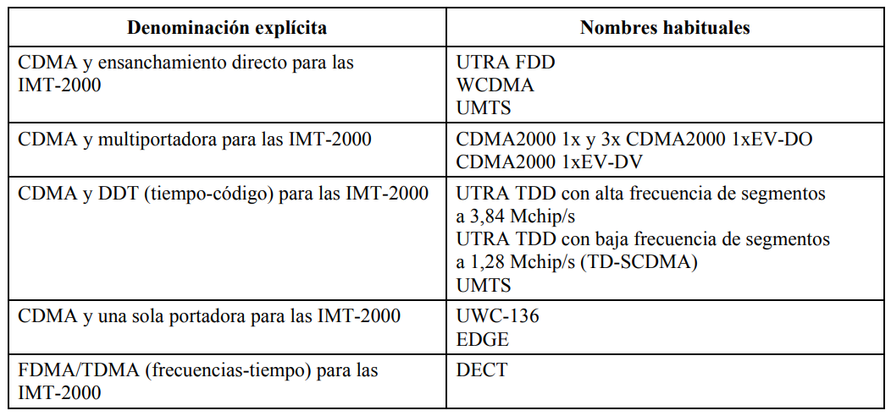
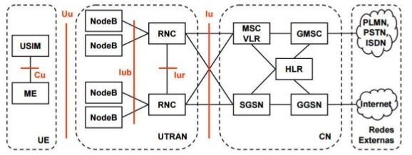
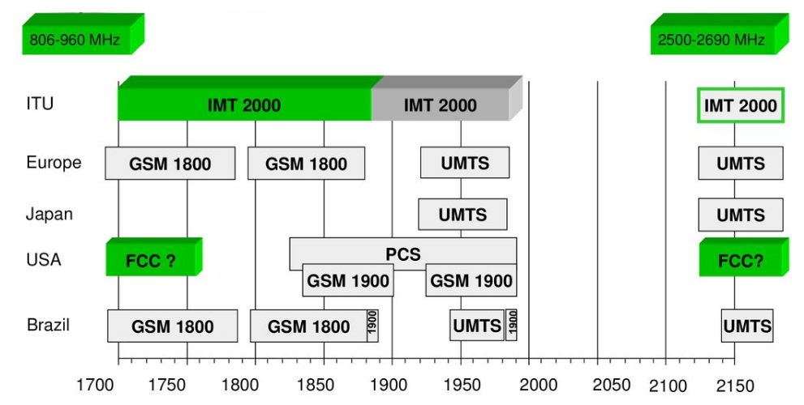
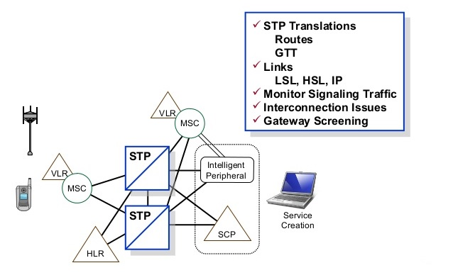
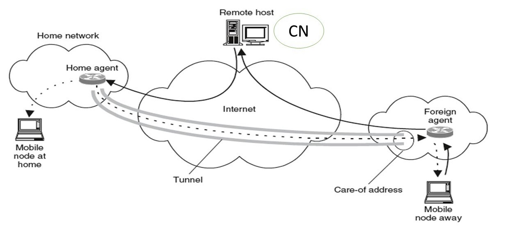
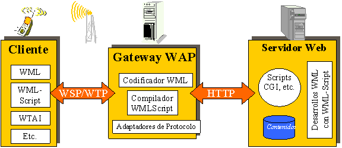
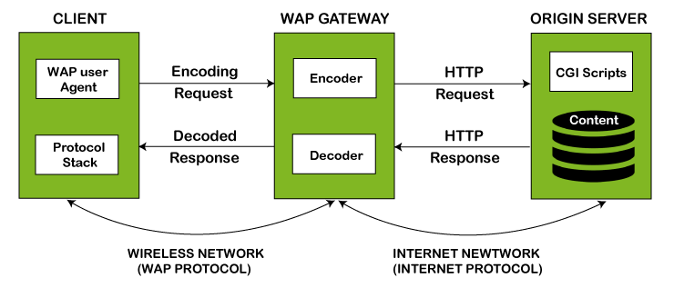

Unidades terminales robustas, que requieren poco mantenimiento y soportan condiciones ambientales muy diferentes
Flexibilidad y modularidad.
Cobertura de grandes territorios
Altos niveles de fiabilidad y disponibilidad del equipo

Video Informativo
Frecuencias IMT-2000

Entornos de funcionamiento para las IMT-2000

Interfaces radioeléctricas terrenales para las IMT-2000

UMTS (Universal Mobile Telecommunications System)
Características
Uso de tecnología WCDMA (Wide Code Division Multiple Access)
Velocidad de acceso a Internet elevada
Transmisión de audio y video en tiempo real
Transmisión de voz con calidad equiparable a la de las redes fijas
Video Informativo
Arquitectura UMTS

Bandas 3G/UMTS

WIN (Wireless Intelligent Network)
Características
Servicios como identificador de llamadas y mensajería de voz incluidos en el paquete cuando compran y activan un teléfono celular o de servicio de comunicaciones personales (PCS)
Emplea red de señalización existente SS7
SERVICIOS WIN
Servicios de Roaming
Permite identificar a usuarios cuando están fuera de su área de servicio y poder ofrecerle el servicio
Selección de operador
Permite que un usuario con el mismo equipo pueda tener el servicio contratado con diferentes operadores a la vez
Marcación por reconocimiento de voz
Permite al usuario manejar su equipo móvil con comandos de voz. Esta es una función residente en los equipos que se complementa con la red WIN
Tarjetas prepagadas
Permite hacer llamadas pagando el servicio con anterioridad
Métodos de tarificación
Permite aplicar diferentes tarifas a los usuarios según la originación de la llamada, el destino, el contrato y el servicio
Servicios de transmisión de datos
Permite ver al teléfono como un pager y conjuntar funciones, como llamar al número que envió el mensaje, etc.

MOBILE IP
Mobile IP es un estándar de protocolo comunicación diseñado para permitir a usuarios de dispositivos móviles moverse entre redes manteniendo la misma dirección IP.
Tipos de Movilidad
Macro movilidad: el desplazamiento de un móvil se produce entre dos dominios de redes diferentes.
Micro movilidad: el desplazamiento de un móvil se produce entre dos subredes de un mismo dominio administrativo.

WAP (Wireless Application Protocol)
Características
Estándar de facto o un protocolo diseñado para micro-navegadores, y permite que los dispositivos móviles interactúen, intercambien y transmitan información a través de Internet
Consta de 3 niveles conocidos como Cliente, Gateway y Servidor de origen
La solicitud que envía a través del móvil a la puerta de enlace WAP se denomina solicitud de codificación.


Video Informativo
BIBLIOGRAFÍA
M. Vargas, «Comunicaciones Móviles: Un nuevo entorno tecnológico,» 2018. [En línea]. Available: https://slideplayer.es/slide/14287160/.
G. Rodríguez, «SISTEMA AMPS,» 2015. [En línea]. Available: http://www.spw.cl/05mar07_mobile/Material_moviles/amps.pdf.

 Archivos y Software
Archivos y Software